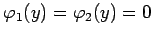

Inhalt Index DeskTop Bronstein

 Differentialgleichungen Partielle Differentialgleichungen Lineare partielle Differentialgleichungen 2. Ordnung Integrationsmethoden für lineare partielle Differentialgleichungen 2. Ordnung
Differentialgleichungen Partielle Differentialgleichungen Lineare partielle Differentialgleichungen 2. Ordnung Integrationsmethoden für lineare partielle Differentialgleichungen 2. Ordnung


für das Rechteck Zur Lösung wird die Methode der Variablentrennung verwendet.
wird die Lösung der LAPLACEschen Differentialgleichung vom elliptischen Typ
mit Hilfe einer Funktion u(x,y) gesucht, die auch die Randbedingungen
erfüllt.
Als erster Schritt wird eine partikuläre Lösung für die Randbedingungen  bestimmt. Einsetzen des Produktansatzes
| u=X(x)Y(y) | (9.93c) |
| (9.93d) |
mit dem Eigenwert  in Analogie zu den oben betrachteten Aufgaben A bis C. Da X(0) =X(a) =0 gilt, ergibt sich
in Analogie zu den oben betrachteten Aufgaben A bis C. Da X(0) =X(a) =0 gilt, ergibt sich
| (9.93e) |
Im zweiten Schritt wird die allgemeine Lösung der Differentialgleichung
| (9.93f) |
in der Form
| (9.93g) |
hingeschrieben. Daraus ergibt sich für die Randbedingungen u(0,y)=u(a,y) =0 eine partikuläre Lösung von (9.93a) in der Form
 |
(9.93h) |
Im dritten Schritt wird die allgemeine Lösung als Reihe
| (9.93i) |
angesetzt, so daß sich aus den Randbedingungen für y = 0 und y = b
mit den Koeffizienten
| (9.93k) |
ergibt.
In Analogie dazu wird die Aufgabe für die Randbedingungen gelöst, die in der Summe mit (9.93j) die allgemeine Lösung von (9.93a) und (9.93b) bildet.